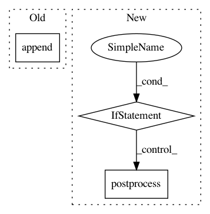

f30505b836141030f50cdd941f9cbc8f4cda0995,scipy/sparse/linalg/isolve/lgmres.py,,lgmres,#Any#Any#Any#Any#Any#Any#Any#Any#Any#Any#Any#,14
Before Change
hcur = []
for v in vs:
alpha = dot(v, v_new)
hcur.append(alpha)
v_new = axpy(v, v_new, v.shape[0], -alpha) // v_new -= alpha*v
hcur.append(nrm2(v_new))
if hcur[-1] == 0:
After Change
raise RuntimeError("QR solution failed")
y *= inner_res_0
if not np.isfinite(y).all():
// Floating point over/underflow, non-finite result from
// matmul etc. -- report failure.
return postprocess(x), k_outer + 1
// -- GMRES terminated: eval solution
dx = ws[0]*y[0]
for w, yc in zip(ws[1:], y[1:]):
dx = axpy(w, dx, dx.shape[0], yc) // dx += w*yc
In pattern: SUPERPATTERN
Frequency: 3
Non-data size: 3
Instances
Project Name: scipy/scipy
Commit Name: f30505b836141030f50cdd941f9cbc8f4cda0995
Time: 2016-02-29
Author: pav@iki.fi
File Name: scipy/sparse/linalg/isolve/lgmres.py
Class Name:
Method Name: lgmres
Project Name: keras-team/autokeras
Commit Name: 4b2a2f18a4da11d9573d341c38db2c754c77fff5
Time: 2019-09-24
Author: 45730028+yufei-12@users.noreply.github.com
File Name: autokeras/auto_model.py
Class Name: AutoModel
Method Name: _postprocess